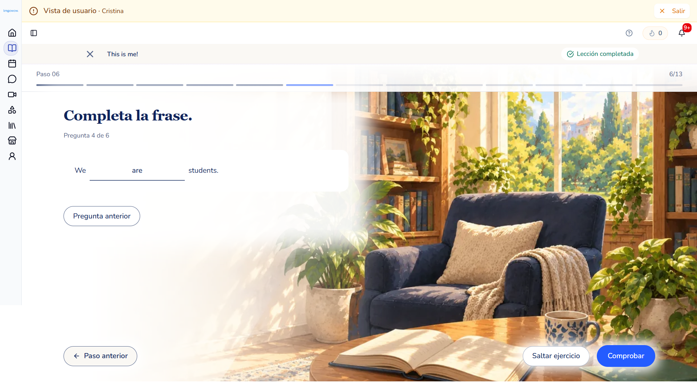
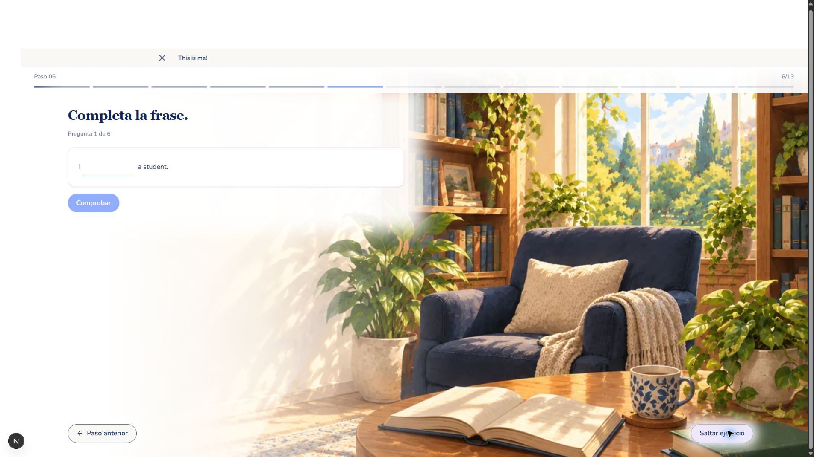
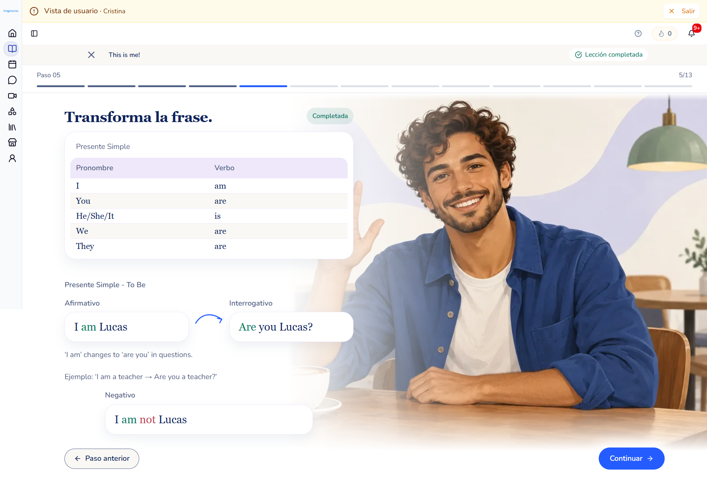
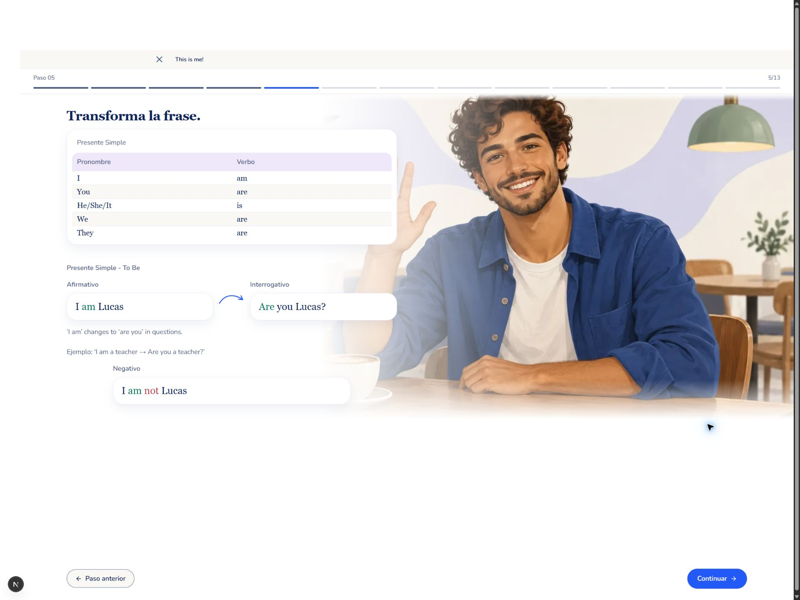
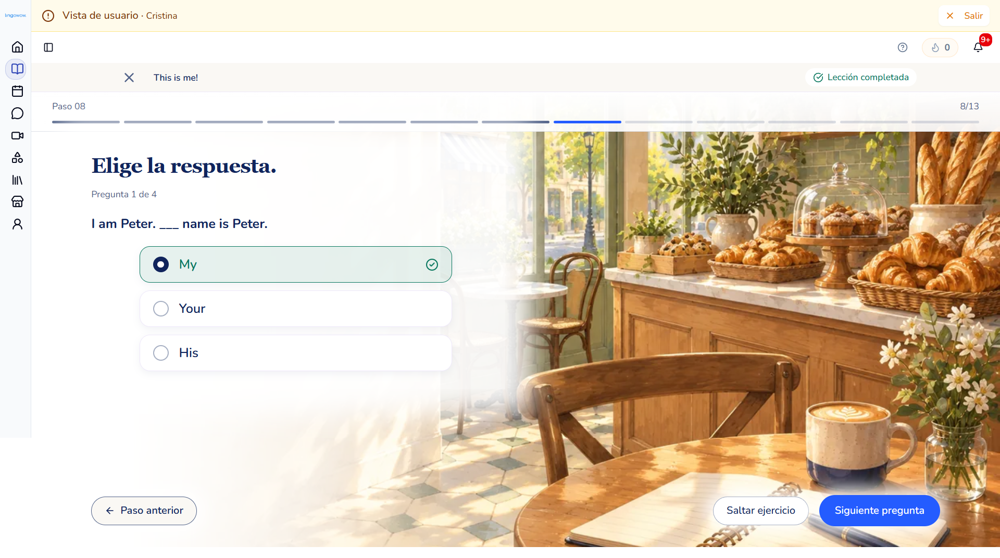
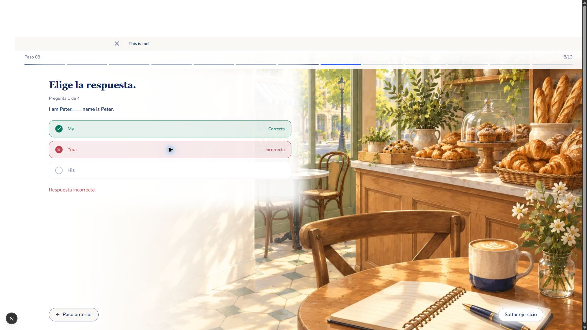
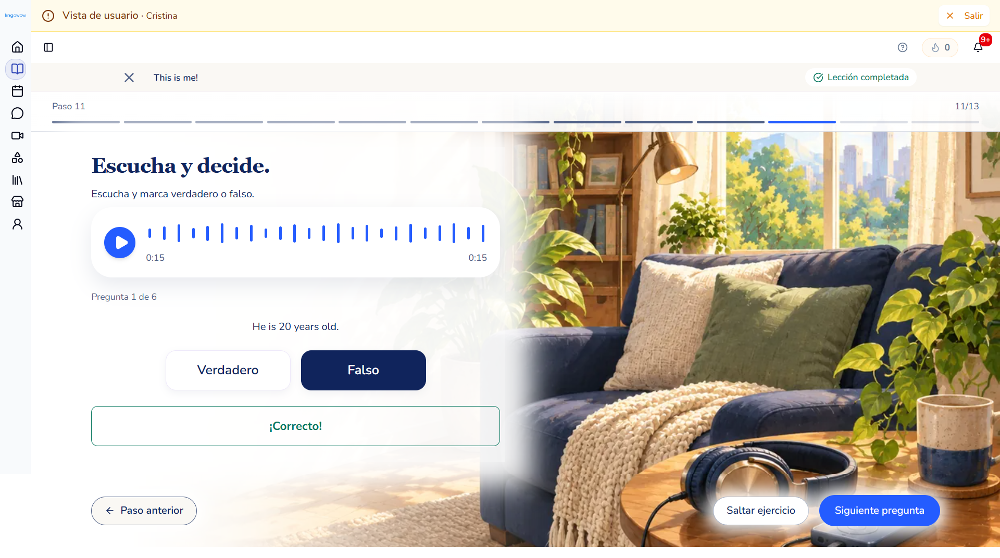
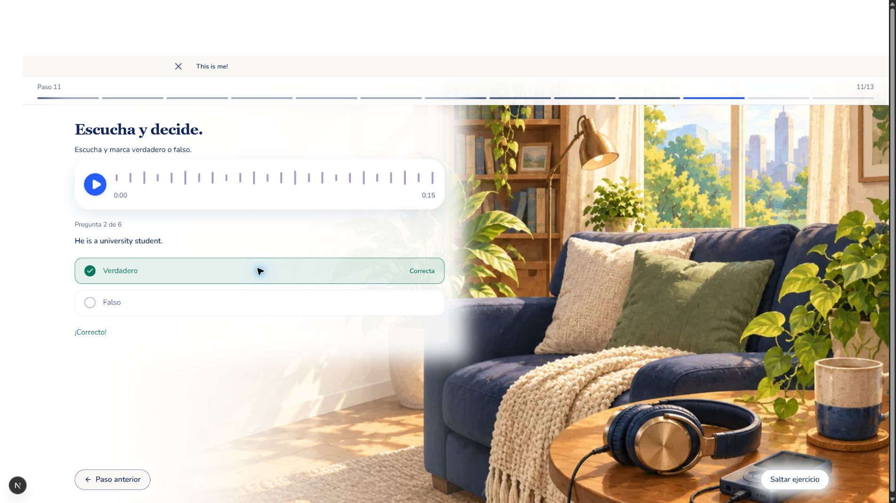

Últimas instrucciones: corrección al seleccionar, avance automático, un solo botón local al completar frases. La vista local reproduce el visor real; la franja vacía superior sustituye el header autenticado.







